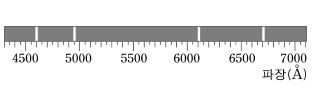
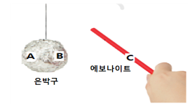
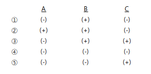
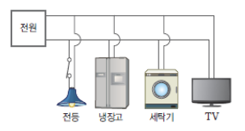
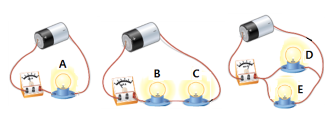
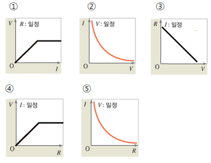
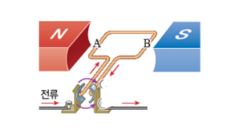
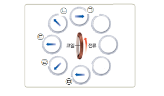

1.다음 중 ‘더 이상 다른 물질로 분해되지 않으면서 물질을 이루는 기본 성분’이 아닌 것은? [3점]
① 탄소
② 수소
③ 구리
④ 물
⑤ 황
2. 불꽃 반응에 대한 설명으로 옳지 않은 것은? [3.5점]
① 금속 원소 중 일부가, 그 금속 원소를 포함한 물질을 불꽃에 넣었을 때 특정한 불꽃 반응 색을 나타내는 현상이다.
② 염화 나트륨과 질산 나트륨의 불꽃 반응 색은 노란색으로 같다.
③ 질산 나트륨과 질산 칼륨의 불꽃 반응 색은 서로 다르다.
④ 염화 구리의 불꽃 반응 색은 청록색, 황산 바륨의 불꽃 반응 색은 황록색이다.
⑤ 불꽃 반응 색을 비교하면 원소의 종류를 완전히 구별할 수 있다.
3.그림은 어떤 원소의 선 스펙트럼을 나타낸 것이다.
선 스펙트럼은 원소마다 다르게 나타나므로, 이를 이용하면 불꽃 반응 색이 비슷한 원소들도 쉽게 구별할 수 있다. 다음 중 원소의 종류를 구별하기 위해 선 스펙트럼을 비교할 때, 그 기준으로 이용할 수 없는 것은? [3점]
① 선의 개수
② 선의 색깔
③ 선의 길이
④ 선의 굵기
⑤ 선의 위치
4. 다음은 원자의 구조를 그린 것이다. 이에 대한 설명으로 옳지 않은 것은? [3점]

① A는 원자핵이고, B는 전자이다.
② 원자의 종류에 따라 A의 개수가 다르다.
③ A는 (+)전하를 띠고, B는 (-)전하를 띤다.
④ A는 원자의 중심에 위치하고, B는 A 주위를 끊임없이 움직이고 있다.
⑤ (+)전하량과 (-)전하량이 같아서 원자는 항상 중성이다.
5. 다음 중 분자에 대한 설명으로 가장 적절한 것은? [3점]
① 물질을 이루는 기본 입자이다.
② 중성 원자가 전자를 잃거나 얻어 전하를 띠게 된 입자이다.
③ 독립된 입자로 존재하여 물질의 성질을 나타내는 가장 작은 입자이다.
④ 더 이상 다른 물질로 분해되지 않으면서 물질을 이루는 기본 성분이다.
⑤ 원소, 원자, 분자, 이온 중 개수를 셀 수 있는 유일한 입자이다.
6. 다음 중 그림과 같은 분자 모형으로 나타낼 수 없는 물질은? [3.5점]

① 물(H2O)
② 황화 수소(H2S)
③ 이산화 황(SO2)
④ 일산화 탄소(CO)
⑤ 이산화 질소(NO2)
7. 다음 중 원소 이름과 원소 기호를 바르게 짝지은 것을 모두 고르면? [3점]
① 규소 - Li
② 염소 – Cl
③ 구리 – Gu
④ 나트륨 – Na
⑤ 알루미늄 – Ar
8. 다음 중 총 원자 수가 가장 많은 것과 분자 수가 가장 많은 것을 <보기>에서 골라 차례대로 나열한 것은? [4점]
<보 기>
ㄱ. CO2 ㄴ. H2S ㄷ. 4HCl
ㄹ. 3H2O ㅁ. 2H2O2 ㅂ. NH2Cl
① ㄱ, ㄷ
② ㄴ, ㄹ
③ ㄷ, ㅁ
④ ㄹ, ㄷ
⑤ ㅂ, ㄷ
9. 다음은 어떤 이온의 이온식을 나타낸 것이다.
Ba2+
이에 대한 설명으로 옳지 않은 것은? [3.5점]
① 이 이온은 양이온이다.
② 바륨 이온이라고 부른다.
③ Ba는 원소 기호를 의미한다.
④ +는 전하의 종류를 의미한다.
⑤ 바륨 원자가 두 개의 전자를 얻어 이온이 되었다.
10. 다음 액체 물질에 전기전도계를 담갔을 때 전기가 통하지 않는 물질을 고르면? [3점]
① 수액(링거액)
② 이온 음료
③ 설탕 수용액
④ 질산 칼슘 수용액
⑤ 염화 나트륨 수용액
11. 염화 나트륨에 대한 설명으로 옳지 않은 것은? [3.5점]
① 염화 나트륨은 물에 녹아 염화 이온과 나트륨 이온으로 나누어진다.
② 염화 나트륨 수용액에는 이온이 들어 있어 전류를 흘려주면 전기가 잘 통한다.
③ 염화 나트륨을 불꽃 속에 넣으면 노란색 불꽃 반응 색이 나타내는데, 이는 나트륨이 들어 있기 때문이다.
④ 염화 나트륨의 불꽃 반응 색을 분광기로 관찰하면 불꽃 반응 색과 동일한 색깔로 이루어진 단 한 줄의 스펙트럼이 나타난다.
⑤ 염화 나트륨 수용액에 질산 은 수용액을 떨어뜨리면 흰색 앙금이 생기는데, 이는 염화 이온이 질산 이온과 반응했기 때문이다.
12. 다음은 병원에서 사용하는 어떤 수액의 성분 표시와 사용상 주의점의 일부를 나타낸 것이다.
[성분] 포도당 50g/L, 젖산 나트륨 6.1g/L, 염화 칼륨 300mg/L,
염화 칼슘 200mg/L, 염화 나트륨 6g/L
[사용상 주의점] 탄산 이온과 앙금을 생성하므로 탄산을 함유하는
제제와 배합하지 않는다.
위와 같은 사용상 주의점을 표기한 이유와 관련이 있는 성분의 이름은? [4점]
① 포도당
② 젖산 나트륨
③ 염화 칼륨
④ 염화 칼슘
⑤ 염화 나트륨
13. 위와 같은 전기적 현상이 일어나는 까닭은? [3점]
① 분자가 이동하여서
② 원자가 이동하여서
③ 양성자가 이동하여서
④ 전자가 이동하여서
⑤ (+)전하가 이동하여서
14. 위의 전기적 현상을 설명한 것으로 관련이 없는 것은? [3점]
① 마찰한 두 물체 사이에 인력이 작용한다.
② (-)전하를 얻은 물질이 (-)전기를 띠게 된다.
③ 두 물체는 모두 대전되어 대전체가 된다.
④ 빨대의 (+)전하의 양과 (-)전하의 양이 같아진다.
⑤ 머리를 빗을 때 머리카락이 달라붙은 현상과 같다.
15. 에보나이트 막대를 천에 마찰시켰더니 천이 (+)전기로 대전되었다. 이 막대를 실에 매달아 놓은 은박 구에 접근시켰을 때 은박구(A, B)와 막대(C)가 띠는 전기의 종류를 옳게 나타낸 것은? [3점]


16.아래는 우리 집 건물의 전기 배선을 나타낸 것이다. 거실의 전등 하나가 꺼져도 나머지 전기기구를 사용할 수 있는 이유는 무엇인가? [3점]

① 병렬구조이기 때문
② 직렬구조이기 때문
③ 전류가 약해지기 때문
④ 전압이 강해지기 때문
⑤ 전체저항이 달라져 전류가 세지기 때문
17. 전기저항에 대한 설명으로 옳지 않은 것은? [3점]
① 물질마다 전기 저항은 다르다.
② 같은 종류의 물질도 길이가 길수록 전기 저항이 작다.
③ 같은 종류의 물질도 두께가 굵으면 저항이 달라져 전류가 세게 흐른다.
④ 모양이나 재료가 다른 물체를 회로에 연결하면 저항이 달라진다.
⑤ 1Ω은 1V의 전압을 걸었을 때 흐르는 전류의세기가 1A인 도선의 저항이다.
※(18~19) 같은 전구(A~E)를 동일한 전기기구를 이용하여 여러 방법으로 연결하였다. 물음에 답하시오.
18. 밝기가 같은 전구끼리 모은 것은? [3점]
① A, B
② A, B, C
③ A, D, E
④ B, C, D, E
⑤ A, B, C, D, E
19. 각 전구에 걸리는 소비전압을 잘 비교한 것은? [3.5점]
① A > B > C > D> E
② A > B = C > D > E
③ A = B = C > D = E
④ A = D = E > B > C
⑤ A = D = E > B = C
20. 전압, 전류, 저항 사이의 관계를 그래프로 옳게 나타낸 것은?(전압, 전류 세기, 저항) [3.5점]

21. 자기장속에 전류가 흐르는 도선을 두었을 때 가장 큰 힘을 받는 도선은? [3.5점]

① 자기장과 도선이 이루는 각도가 0°일 때
② 자기장과 도선이 이루는 각도가 30°일 때
③ 자기장과 도선이 이루는 각도가 45°일 때
④ 자기장과 도선이 이루는 각도가 90°일 때
⑤ 자기장과 도선이 이루는 각도가 180°일 때
22. 자석과 코일로 구성된 아래의 전동기에 대한 설명으로 옳은 것은? [4점]

① 전류가 셀수록 코일이 더 느리게 회전한다.
② 자기장의 세기와 관계없이 일정속도로 회전한다.
③ 전류가 끊어지면 도선이 받는 힘이 약해 느리게 회전한다.
④ 자석의 극이 바뀌어도 코일이 회전하는 방향은 바뀌지 않는다.
⑤ A, B쪽의 힘의 방향이 서로 반대가 되어 회전한다.
※(23~24) 에나멜선을 여러 번 감아 코일을 만들고 전지에 연결한 후 그 주변에 나침판을 놓아 바늘의 움직임을 관찰하였다. 물음에 답하시오.
23. 코일 주위에 놓여있는 나침반 바늘의 N극이 가리키는 방향을 위 그림과 같이 기록하였다. 잘못된 기록은? [3.5점]
① ㉠
② ㉡
③ ㉢
④ ㉣
⑤ ㉤
24.위 코일에 대한 설명으로 옳은 것을 모두 고른 것은? [4점]
<보 기>
㉠ 강한 전류가 흐르는 코일 주변에는 강한자기장이 생긴다.
㉡ 도선의 전류방향이 바뀌면 자기장의 방향도 바뀐다.
㉢ 감은 코일수가 많을수록 전류가 세게 흐른다.
① ㉠
② ㉡
③ ㉠, ㉡
④ ㉡, ㉢
⑤ ㉠, ㉡, ㉢
[서술형1] 베릴륨 원자는 원자핵 주위에 전자가 4개 있다. 베릴륨 원자가 전자 2개를 잃어 베릴륨 이온이 형성되는 과정을 원자 모형을 이용하여 나타내시오. [4점]
<유의사항>
* 원자핵의 전하량을 반드시 쓸 것!* 원자에 포함된 모든 전자를 그릴 것!
* 전자의 이동 모습을 표현할 것!
* 원자와 이온의 모형 아래에 원자의 원소기호, 이온의 이온식을 반드시 쓸 것!
(베릴륨의 원소 기호는 Be 이다.)
[서술형2] 다음은 수정이가 물질 X를 확인하기 위해 실험한 결과이다.
<유의사항>
(가) X를 에탄올 수용액에 녹여 불꽃 반응 실험을 하였더니 보라색이 나타났다.(나) X를 물에 녹인 다음 질산 납 수용액을 떨어뜨렸더니 노란색 앙금이 생성되었다.